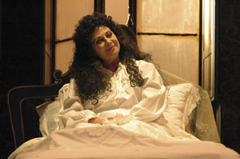

Ferdinando
di Annibale Ruccello
con Isa Danieli
e con Luisa Amatucci, Lello Serao, Adriano Mottola
regia di Annibale Ruccello (ripresa da Isa Danieli)
|  |
“In una decadente e decaduta villa della zona vesuviana, un anno prima della presa di Roma da parte dell’esercito italiano, si sono rintanate due donne. Donna Clotilde, una baronessa borbonica che, dopo la caduta del Regno delle Due Sicilie, vi si è rifugiata serrandosi nel letto e nel dialetto come segno di disprezzo per la nuova cultura piccolo borghese che si va affermando dopo l’unificazione, e donna Gesualda, sua compagna di “prigionia”, una cugina povera che svolge presso di lei l’ambiguo ruolo di infermiera/carceriera scandendo le giornate fra pasticche, acque termali e farmaci vari. Le due donne hanno quotidiano ospite della villa il parroco del paese, Don Catellino, un prete meschino ed ambiguo che si barcamena tra un atavico servilismo borbonico e traffici con la nuova classe politica in ascesa. Tutto sembra immoto, ormai irrimediabilmente intrasformabile, quando l’arrivo imprevisto e repentino di un giovane nipote di Donna Clotilde getterà il “classico” scompiglio in villa. Ferdinando, di una bellezza morbosa e strisciante, riuscirà a conquistare lentamente tutti i protagonisti della storia, intrecciando promiscue relazioni con le due donne e con il prete, facendo così scoppiare tutte le contraddizioni ed i veleni sopiti sotto la polvere e le ragnatele”.